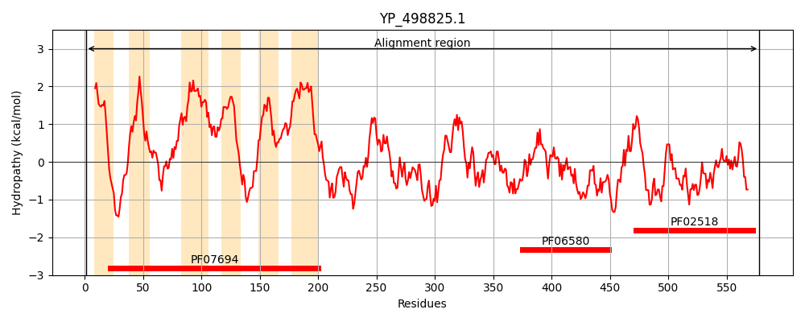
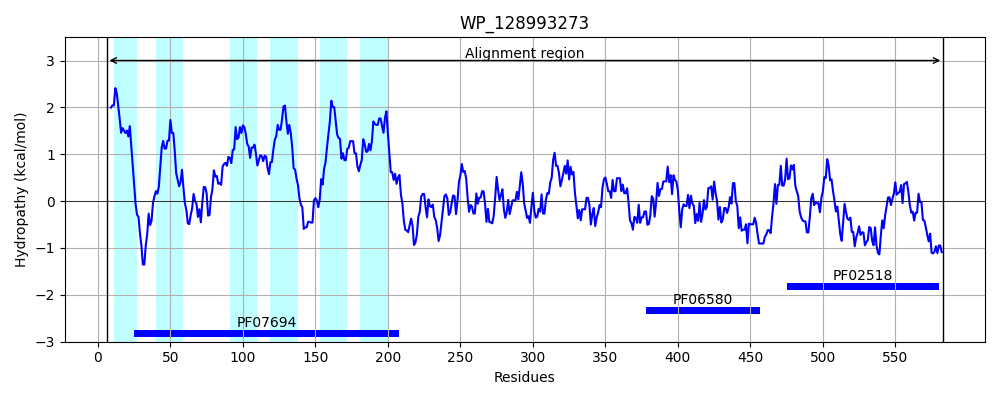
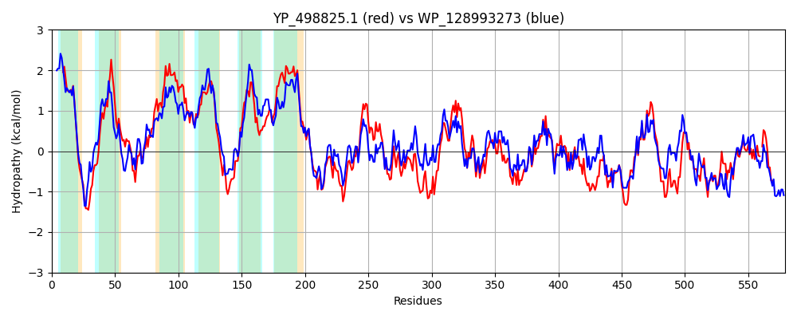

Hit Accession: WP_128993273
Hit TCID: 9.B.33.1.4
Hit Description: gnl|BL_ORD_ID|21843 gnl|TC-DB|WP_128993273.1|9.B.33.1.4 two-component system sensor histidine kinase LytS [Bacillus subtilis]
Mach Len: 579
e:0.000000
Query TMS Count : 6
Hit TMS Count: 6
TMS-Overlap Score: 5.300000
Predicted Substrates:None
BLAST Alignment:
Score: 1383 , Bit scores: 537 bits, E-value: 0.0e+00, Alignment length: 579, Percentage identity: 47
Query: 1 MLLLERVGLIIILAYVLMNIPYFKNLMNRRRTWKARWQLCIIFSLFALMSNLTGIVIDHQHSLSGSVYFRLDDDVSLANTRVLTIGVAGLVGGPFVGLFVGVISGIFRVYMGGADAQVYLISSIFIGIIAGYFGLQAQRRKRYPSIAKSAMIGIVMEMIQMLSILTFSHDKAYAVDLISLIALPMIIVNSVGTAIFMSIIISTLKQEEQMKAVQTHDVLQLMNQTLPYFKEGLNRESAQQIAMIIKNLMKVSAVAITSKNEILSHVGAGSDHHIPTNEILTSLSKDVLKSGKLKEVHTKEEIGCSHPNCPLRAAIVIPLEMHGSIVGTLKMYFTNPNDLTFVERQLAEGLANIFSSQIELGEAETQSKLLKDAEIKSLQAQVSPHFFFNSINTISALVRINSEKARELLLELSYFFRANLQGSKQHTITLDKELSQVRAYLSLEQARYPGRFNININVEDKYRDVLVPPFLIQILVENAIKHAFTNRKQGNDIDVSVIKETATHVRIIVQDNGQGISKDKMHLLGETSVESESGTGSALENLNLRLKGLFGKSAALQFES-TSSGTTFWCVLPYERQEE 578
+++LERVG+I+IL ++L + F+ + + +K + L IFSLF+++SN TGI I ++ F +D S+ANTR+L + + GL+GGPFVG +G+++G+ R +GG+ A +SSI G++AG G +R R P+ +A++GI ME +QM+ IL + + A +L+S+I +PMI++N G+ IF+SII + +++EEQ +A++TH VL + +QTLP+F++GLN S + +A II L AV++T K +IL+HVGAG DHHIP+ ++T LSK V+K+G + + ++EEI C H CPL AAIV+PL +G+ +GTLKMYF +P L+ VE +LAEGLA +FS+Q+ELGEAE QSKLLKDAEIK+LQAQV+PHF FN+INTISAL R + EK R+LLL+LS +FR+NLQG++Q I L KEL+ + AYLSLEQAR+PG++ I +N++ + + +PPF++Q+LVENA++HAF ++ + V V+ + A+ V + V DNG+GI D + LG+ S+ GTG+AL NLN RL GLFG+ AAL S GT +P ++ +E
Sbjct: 6 IMMLERVGIIVILGFILAHTKLFRQALQNQDGYKGKAILISIFSLFSIISNYTGIEIQRNMIVNNDWVFTIDPSGSIANTRILGVEIGGLLGGPFVGAGIGILAGLHRFSLGGSTALSCAVSSILAGVLAGLIGRYFTKRYRMPTPRIAALVGIGMESLQMIIILLMAKPFSDAWELVSMIGIPMILINGTGSFIFLSIIQAIIRKEEQARALETHRVLTIADQTLPFFRQGLNENSCKSVAAIIHKLTGTDAVSLTDKEKILAHVGAGMDHHIPSKSLITGLSKKVIKTGHIMKAISQEEIECMHAECPLHAAIVLPLTSNGNTIGTLKMYFKSPAGLSQVEEELAEGLAMLFSTQLELGEAELQSKLLKDAEIKALQAQVNPHFLFNAINTISALCRTDVEKTRKLLLQLSVYFRSNLQGARQLLIPLSKELNHLNAYLSLEQARFPGKYKIELNIDSRLEQIEIPPFVLQVLVENALRHAFPKKQDMCKVTVCVLSDDAS-VYMKVTDNGRGIPPDVLPELGKKPFPSKEGTGTALYNLNQRLIGLFGQQAALHISSEVHKGTEVSFQVPMQQMKE 583 | Protein Hydropathy Plots: |
|---|
|  |  |
Pairwise Alignment-Hydropathy Plot:
|
|---|
|  |